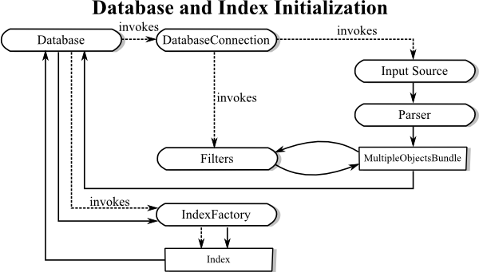
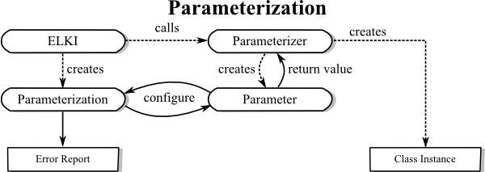

ELKI: Environment for DeveLoping KDD-Applications Supported by Index-Structures.
ELKI is a generic framework for a broad range of KDD-applications and their development. For background, contact-information, and contributors see https://elki-project.github.io/.
This is the documentation for version 0.8.0, published as:
Erich Schubert:
Automatic Indexing for Similarity Search in ELKI
Int. Conf. Similarity Search and Applications
https://doi.org/10.1007/978-3-031-17849-8_16
Getting started
The ELKI website contains additional documentation. A Tutorial exported is included with this documentation and a good place to start.
Invocation
To use the KDD-Framework we recommend an executable .jar-file:
elki.jar. Since release 0.3 it will by default invoke a minimalistic GUI called MiniGUI when
you call java -jar elki.jar. For command line use (for example for batch processing and scripted operation),
you can get a description of usage by calling java -jar elki.jar KDDCLIApplication -h.
The MiniGUI can also serve as a utility for building command lines, as it will print the full command line to the log window.
For more information on using files and available formats
as data input see elki.datasource.parser. ELKI uses
a whitespace separated vector format by default, but there also is a parser for
ARFF files included that can read most ARFF files (mixing sparse and dense vectors is currently not allowed).
An extensive list of parameters can be browsed sorted by class or sorted by option ID.
Some examples of completely parameterized calls for different algorithms are described at example calls.
A list of related publications, giving details on many implemented algorithms, can be found in the class article references list.
Workflow - Where Do Which Objects Go?
The database connection manages reading of input files or databases and provides a
Database-Object - including index structures - as a virtual database to the KDDTask.
The KDDTask applies a specified algorithm on this database and collects the result from the algorithm.
Finally, KDDTask hands on the obtained result to a ResultHandler.
The default-handler is ResultWriter, writing the result to STDOUT or,
if specified, into a file.
Database and indexing layer
The database and indexing layer is a key component of ELKI.
This is not just a storage for double[], as with many other frameworks.
It can store various types of objects, and the integrated index structures provide access to fast
distance,
similarity,
kNN,
RkNN and
range query methods
for a variety of distance functions.
The standard flow for initializing a database is as depicted here:

The standard stream-based data sources such as
FileBasedDatabaseConnection
will open the stream, feed the contents through a
Parser to obtain an initial
MultipleObjectsBundle. This is
a temporary container for the data, which can then be modified by arbitrary
ObjectFilters.
In the end, the
MultipleObjectsBundle
is bulk-inserted into a Database, which will then
invoke its IndexFactorys to add
Index instances to the appropriate relations.
When a request for a
distance,
similarity,
kNN,
RkNN or
range query is received by the database,
it queries all indexes if they have support for this query. If so, an optimized query is returned,
otherwise a linear scan query can be returned unless
QueryBuilder.optimizedOnly()
was given.
For this optimization to work, you should be using the proper APIs of the
QueryBuilder where possible, instead of
initializing low level classes such as an explicit linear scan query.
For efficiency, try to instantiate the query only once per algorithm run, and avoid running the optimization step for every object.
How to make use of this framework
Extension
To provide new applications one is simply to implement the specified interfaces. There are interfaces for a broad range of targets of development. Compare the tree of interfaces to get an overview concerning the provided interfaces.A good place to get started is to have a look at some of the existing algorithms, and see how they are implemented.
Visit the ELKI Wiki, which has a growing amount of documentation. You are also welcome to contribute, of course!
Parameterization API
ELKI is designed for command-line, GUI and Java operation. For command-line and GUI, an extensive help functionality is provided along with input assistance. Therefore, you should also support the parameterizable API. The requirements are quite different from regular Java constructors, and cannot be expressed in terms of a Java API.
For useful error reporting and input assistance in the GUI we need to have more extensive
typing than Java uses (for example we might need numerical constraints) and we also want to be able
to report more than one error at a time. In ELKI 0.4, much of the parameterization was
refactored to static helper classes usually found as a public static class Par
and instances of
Parameterizer.

Keep the complexity of Parameterizer classes and constructors invoked by these classes low, since these may be heavily used during the parameterization step. Postpone any extensive initialization to the main algorithm invocation step!
| Package | Description |
|---|---|
| elki |
ELKI framework "Environment for Developing KDD-Applications Supported by
Index-Structures".
|
| elki.algorithm |
Miscellaneous algorithms.
|
| elki.algorithm.statistics |
Statistical analysis algorithms.
|
| elki.application |
Base classes for standalone applications.
|
| elki.application.benchmark |
Benchmarking pseudo algorithms.
|
| elki.application.cache |
Utility applications for the persistence layer such as distance cache
builders.
|
| elki.application.experiments |
Packaged experiments to make them easy to reproduce.
|
| elki.application.greedyensemble |
Greedy ensembles for outlier detection.
|
| elki.application.internal |
Internal utilities for development.
|
| elki.application.statistics |
Applications to compute some basic data set statistics.
|
| elki.classification |
Classification algorithms.
|
| elki.clustering |
Clustering algorithms.
|
| elki.clustering.affinitypropagation |
Affinity Propagation (AP) clustering.
|
| elki.clustering.biclustering |
Biclustering algorithms.
|
| elki.clustering.correlation |
Correlation clustering algorithms.
|
| elki.clustering.correlation.cash |
Helper classes for the
CASH
algorithm. |
| elki.clustering.dbscan |
DBSCAN and its generalizations.
|
| elki.clustering.dbscan.parallel |
Parallel versions of Generalized DBSCAN.
|
| elki.clustering.dbscan.predicates |
Neighbor and core predicated for Generalized DBSCAN.
|
| elki.clustering.dbscan.util |
Utility classes for specialized DBSCAN implementations.
|
| elki.clustering.em |
Expectation-Maximization clustering algorithm for Gaussian Mixture Modeling
(GMM).
|
| elki.clustering.em.models | |
| elki.clustering.hierarchical |
Hierarchical agglomerative clustering (HAC).
|
| elki.clustering.hierarchical.birch |
BIRCH clustering.
|
| elki.clustering.hierarchical.extraction |
Extraction of partitional clusterings from hierarchical results.
|
| elki.clustering.hierarchical.linkage |
Linkages for hierarchical clustering.
|
| elki.clustering.kcenter |
K-center clustering.
|
| elki.clustering.kmeans |
K-means clustering and variations.
|
| elki.clustering.kmeans.initialization |
Initialization strategies for k-means.
|
| elki.clustering.kmeans.initialization.betula |
Initialization methods for BIRCH-based k-means and EM clustering.
|
| elki.clustering.kmeans.parallel |
Parallelized implementations of k-means.
|
| elki.clustering.kmeans.quality |
Quality measures for k-Means results.
|
| elki.clustering.kmeans.spherical |
Spherical k-means clustering and variations.
|
| elki.clustering.kmedoids |
K-medoids clustering (PAM).
|
| elki.clustering.kmedoids.initialization | |
| elki.clustering.meta |
Meta clustering algorithms, that get their result from other clusterings or
external sources.
|
| elki.clustering.onedimensional |
Clustering algorithms for one-dimensional data.
|
| elki.clustering.optics |
OPTICS family of clustering algorithms.
|
| elki.clustering.silhouette |
Silhouette clustering algorithms.
|
| elki.clustering.subspace |
Axis-parallel subspace clustering algorithms.
|
| elki.clustering.subspace.clique |
Helper classes for the
CLIQUE
algorithm. |
| elki.clustering.svm | |
| elki.clustering.trivial |
Trivial clustering algorithms: all in one, no clusters, label clusterings.
|
| elki.clustering.uncertain |
Clustering algorithms for uncertain data.
|
| elki.data |
Basic classes for different data types, database object types and label types.
|
| elki.data.model |
Cluster models classes for various algorithms.
|
| elki.data.projection |
Data projections.
|
| elki.data.projection.random |
Random projection families.
|
| elki.data.spatial |
Spatial data types - interfaces and utilities.
|
| elki.data.synthetic.bymodel |
Generator using a distribution model specified in an XML configuration file.
|
| elki.data.type |
Data type information, also used for type restrictions.
|
| elki.data.uncertain |
Uncertain data objects.
|
| elki.data.uncertain.uncertainifier |
Classes to generate uncertain objects from existing certain data.
|
| elki.database |
ELKI database layer - loading, storing, indexing and accessing data.
|
| elki.database.datastore |
General data store layer API (along the lines of
Map<DBID, T> - use everywhere!) |
| elki.database.datastore.memory |
Memory data store implementation for ELKI.
|
| elki.database.ids |
Database object identification and ID group handling API.
|
| elki.database.ids.integer |
Integer-based DBID implementation --
do not use directly - always use
DBIDUtil. |
| elki.database.query |
Database queries - computing distances, neighbors, similarities - API
and general documentation.
|
| elki.database.query.distance |
Prepared queries for distances.
|
| elki.database.query.knn |
Prepared queries for k nearest neighbor (kNN) queries.
|
| elki.database.query.range |
Prepared queries for ε-range queries, that return all objects within
the radius ε.
|
| elki.database.query.rknn |
Prepared queries for reverse k nearest neighbor (rkNN) queries.
|
| elki.database.query.similarity |
Prepared queries for similarity functions.
|
| elki.database.relation |
Relations, materialized and virtual (views).
|
| elki.datasource |
Data normalization (and reconstitution) of data sets.
|
| elki.datasource.bundle |
Object bundles - exchange container for multi-represented objects.
|
| elki.datasource.filter |
Data filtering, in particular for normalization and projection.
|
| elki.datasource.filter.cleaning |
Filters for data cleaning.
|
| elki.datasource.filter.normalization |
Data normalization.
|
| elki.datasource.filter.normalization.columnwise |
Normalizations operating on columns / variates; where each column is treated independently.
|
| elki.datasource.filter.normalization.instancewise |
Instancewise normalization, where each instance is normalized independently.
|
| elki.datasource.filter.selection |
Filters for selecting and sorting data to process.
|
| elki.datasource.filter.transform |
Data space transformations.
|
| elki.datasource.filter.typeconversions |
Filters to perform data type conversions.
|
| elki.datasource.parser |
Parsers for different file formats and data types.
|
| elki.distance |
Distance functions for use within ELKI.
|
| elki.distance.adapter |
Distance functions deriving distances from, e.g., similarity measures.
|
| elki.distance.colorhistogram |
Distance functions for color histograms.
|
| elki.distance.correlation |
Distance functions using correlations.
|
| elki.distance.external |
Distance functions using external data sources.
|
| elki.distance.geo |
Geographic (earth) distance functions.
|
| elki.distance.histogram |
Distance functions for one-dimensional histograms.
|
| elki.distance.minkowski |
Minkowski space Lp norms such as the popular Euclidean and
Manhattan distances.
|
| elki.distance.probabilistic |
Distance from probability theory, mostly divergences such as K-L-divergence,
J-divergence, F-divergence, χ²-divergence, etc.
|
| elki.distance.set |
Distance functions for binary and set type data.
|
| elki.distance.strings |
Distance functions for strings.
|
| elki.distance.subspace |
Distance functions based on subspaces.
|
| elki.distance.timeseries |
Distance functions designed for time series.
|
| elki.evaluation |
Functionality for the evaluation of algorithms.
|
| elki.evaluation.classification |
Evaluation of classification algorithms.
|
| elki.evaluation.classification.holdout |
Holdout and cross-validation strategies for evaluating classifiers.
|
| elki.evaluation.clustering |
Evaluation of clustering results.
|
| elki.evaluation.clustering.extractor |
Classes to extract clusterings from hierarchical clustering.
|
| elki.evaluation.clustering.internal |
Internal evaluation measures for clusterings.
|
| elki.evaluation.clustering.pairsegments |
Pair-segment analysis of multiple clusterings.
|
| elki.evaluation.index |
Simple index evaluation methods.
|
| elki.evaluation.outlier |
Evaluate an outlier score using a misclassification based cost model.
|
| elki.evaluation.scores |
Evaluation of rankings and scorings.
|
| elki.evaluation.scores.adapter |
Adapter classes for ranking and scoring measures.
|
| elki.evaluation.similaritymatrix |
Render a distance matrix to visualize a clustering-distance-combination.
|
| elki.gui |
Graphical User Interfaces for ELKI.
|
| elki.gui.configurator |
Configurator components.
|
| elki.gui.icons |
Icons for ELKI GUI.
|
| elki.gui.minigui |
A very simple UI to build ELKI command lines.
|
| elki.gui.multistep |
Multi-step GUI for ELKI.
|
| elki.gui.multistep.panels |
Panels for the multi-step GUI.
|
| elki.gui.util |
Utility classes for GUIs (e.g., a class to display a logging panel).
|
| elki.index |
Index structure implementations.
|
| elki.index.distancematrix |
Precomputed distance matrix.
|
| elki.index.idistance |
iDistance is a distance based indexing technique, using a reference points embedding.
|
| elki.index.invertedlist |
Indexes using inverted lists.
|
| elki.index.laesa |
Linear Approximating and Eliminating Search Algorithm (LAESA).
|
| elki.index.lsh |
Locality Sensitive Hashing.
|
| elki.index.lsh.hashfamilies |
Hash function families for LSH.
|
| elki.index.lsh.hashfunctions |
Hash functions for LSH.
|
| elki.index.preprocessed.fastoptics |
Preprocessed index used by the FastOPTICS algorithm.
|
| elki.index.preprocessed.knn |
Indexes providing KNN and rKNN data.
|
| elki.index.preprocessed.snn |
Indexes providing nearest neighbor sets.
|
| elki.index.projected |
Projected indexes for data.
|
| elki.index.tree |
Tree-based index structures.
|
| elki.index.tree.betula |
BETULA clustering by aggregating the data into cluster features.
|
| elki.index.tree.betula.distance |
Distance functions for BETULA and BIRCH.
|
| elki.index.tree.betula.features |
Different variants of Betula and BIRCH cluster features.
|
| elki.index.tree.metrical |
Tree-based index structures for metrical vector spaces.
|
| elki.index.tree.metrical.covertree |
Cover-tree variations.
|
| elki.index.tree.metrical.mtreevariants |
M-tree and variants.
|
| elki.index.tree.metrical.mtreevariants.mktrees |
Metrical index structures based on the concepts of the M-Tree
supporting processing of reverse k nearest neighbor queries by
using the k-nn distances of the entries.
|
| elki.index.tree.metrical.mtreevariants.mktrees.mkapp | |
| elki.index.tree.metrical.mtreevariants.mktrees.mkcop | |
| elki.index.tree.metrical.mtreevariants.mktrees.mkmax | |
| elki.index.tree.metrical.mtreevariants.mktrees.mktab | |
| elki.index.tree.metrical.mtreevariants.mtree | |
| elki.index.tree.metrical.mtreevariants.query |
Classes for performing queries (knn, range, ...) on metrical trees.
|
| elki.index.tree.metrical.mtreevariants.strategies.insert |
Insertion (choose path) strategies of nodes in an M-tree (and variants).
|
| elki.index.tree.metrical.mtreevariants.strategies.split |
Splitting strategies of nodes in an M-tree (and variants).
|
| elki.index.tree.metrical.mtreevariants.strategies.split.distribution |
Entry distribution strategies of nodes in an M-tree (and variants).
|
| elki.index.tree.metrical.vptree | |
| elki.index.tree.spatial |
Tree-based index structures for spatial indexing.
|
| elki.index.tree.spatial.kd |
K-d-tree and variants.
|
| elki.index.tree.spatial.kd.split | |
| elki.index.tree.spatial.rstarvariants |
R*-tree and variants.
|
| elki.index.tree.spatial.rstarvariants.deliclu | |
| elki.index.tree.spatial.rstarvariants.flat | |
| elki.index.tree.spatial.rstarvariants.query |
Queries on the R-Tree family of indexes: kNN and range queries.
|
| elki.index.tree.spatial.rstarvariants.rdknn | |
| elki.index.tree.spatial.rstarvariants.rstar | |
| elki.index.tree.spatial.rstarvariants.strategies.bulk |
Packages for bulk-loading R*-trees.
|
| elki.index.tree.spatial.rstarvariants.strategies.insert |
Insertion strategies for R-trees.
|
| elki.index.tree.spatial.rstarvariants.strategies.overflow |
Overflow treatment strategies for R-trees.
|
| elki.index.tree.spatial.rstarvariants.strategies.reinsert |
Reinsertion strategies for R-trees.
|
| elki.index.tree.spatial.rstarvariants.strategies.split |
Splitting strategies for R-trees.
|
| elki.index.tree.spatial.rstarvariants.util |
Utilities for R*-tree and variants.
|
| elki.index.vafile |
Vector Approximation File.
|
| elki.itemsetmining |
Algorithms for frequent itemset mining such as APRIORI.
|
| elki.itemsetmining.associationrules |
Association rule mining.
|
| elki.itemsetmining.associationrules.interest |
Association rule interestingness measures.
|
| elki.logging |
Logging facility for controlling logging behavior of the complete framework.
|
| elki.logging.progress |
Progress status objects (for UI).
|
| elki.logging.statistics |
Classes for logging various statistics.
|
| elki.math |
Mathematical operations and utilities used throughout the framework.
|
| elki.math.geodesy |
Functions for computing on the sphere / earth.
|
| elki.math.geometry |
Algorithms from computational geometry.
|
| elki.math.linearalgebra |
The linear algebra package provides classes and computational methods for
operations on matrices and vectors.
|
| elki.math.linearalgebra.fitting |
Function to numerically fit a function (such as a
Gaussian distribution) to given data. |
| elki.math.linearalgebra.pca |
Principal Component Analysis (PCA) and eigenvector processing.
|
| elki.math.linearalgebra.pca.filter |
Filter eigenvectors based on their eigenvalues.
|
| elki.math.linearalgebra.pca.weightfunctions |
Weight functions used in weighted PCA via
WeightedCovarianceMatrixBuilder. |
| elki.math.scales |
Scales handling for plotting.
|
| elki.math.spacefillingcurves |
Space filling curves.
|
| elki.math.statistics |
Statistical tests and methods.
|
| elki.math.statistics.dependence |
Statistical measures of dependence, such as correlation.
|
| elki.math.statistics.dependence.mcde |
Tests tailored to be used with
MCDEDependence. |
| elki.math.statistics.distribution |
Standard distributions, with random generation functionalities.
|
| elki.math.statistics.distribution.estimator |
Estimators for statistical distributions.
|
| elki.math.statistics.distribution.estimator.meta |
Meta estimators: estimators that do not actually estimate themselves, but
instead use other estimators, e.g., on a trimmed data set, or as an ensemble.
|
| elki.math.statistics.intrinsicdimensionality |
Methods for estimating the intrinsic dimensionality.
|
| elki.math.statistics.kernelfunctions |
Kernel functions from statistics.
|
| elki.math.statistics.tests |
Statistical tests.
|
| elki.outlier |
Outlier detection algorithms.
|
| elki.outlier.anglebased |
Angle-based outlier detection algorithms.
|
| elki.outlier.clustering |
Clustering based outlier detection.
|
| elki.outlier.density |
Density-based outlier detection algorithms.
|
| elki.outlier.distance |
Distance-based outlier detection algorithms, such as DBOutlier and kNN.
|
| elki.outlier.distance.parallel |
Parallel implementations of distance-based outlier detectors.
|
| elki.outlier.intrinsic |
Outlier detection algorithms based on intrinsic dimensionality.
|
| elki.outlier.lof |
LOF family of outlier detection algorithms.
|
| elki.outlier.lof.parallel |
Parallelized variants of LOF.
|
| elki.outlier.meta |
Meta outlier detection algorithms: external scores, score rescaling.
|
| elki.outlier.spatial |
Spatial outlier detection algorithms.
|
| elki.outlier.spatial.neighborhood |
Spatial outlier neighborhood classes.
|
| elki.outlier.spatial.neighborhood.weighted |
Weighted neighborhood definitions.
|
| elki.outlier.subspace |
Subspace outlier detection methods.
|
| elki.outlier.svm |
Support-Vector-Machines for outlier detection.
|
| elki.outlier.trivial |
Trivial outlier detection algorithms: no outliers, all outliers, label
outliers.
|
| elki.parallel |
Parallel processing core for ELKI.
|
| elki.parallel.processor |
Processor API of ELKI, and some essential shared processors.
|
| elki.parallel.variables |
Variables are instantiated for each thread, and allow passing values from
one processor to another within the same thread.
|
| elki.persistent |
Persistent data management.
|
| elki.projection |
Data projections (see also preprocessing filters for basic projections).
|
| elki.result |
Result types, representation and handling.
|
| elki.result.outlier |
Outlier result classes.
|
| elki.result.textwriter |
Text serialization (CSV, Gnuplot, Console, ...).
|
| elki.result.textwriter.naming |
Naming schemes for clusters (for output when an algorithm does not generate
cluster names).
|
| elki.result.textwriter.writers |
Serialization handlers for individual data types.
|
| elki.similarity |
Similarity functions.
|
| elki.similarity.cluster |
Similarity measures for comparing clusters.
|
| elki.similarity.kernel |
Kernel functions.
|
| elki.svm | |
| elki.svm.data | |
| elki.svm.model | |
| elki.svm.qmatrix | |
| elki.svm.solver | |
| elki.timeseries |
Algorithms for change point detection in time series.
|
| elki.utilities |
Utility and helper classes - commonly used data structures, output
formatting, exceptions, ...
|
| elki.utilities.datastructures |
Basic memory structures such as heaps and object hierarchies.
|
| elki.utilities.datastructures.arraylike |
Common API for accessing objects that are "array-like", including lists,
numerical vectors, database vectors and arrays.
|
| elki.utilities.datastructures.arrays |
Utilities for arrays: advanced sorting for primitive arrays.
|
| elki.utilities.datastructures.heap |
Heap structures and variations such as bounded priority heaps.
|
| elki.utilities.datastructures.hierarchy |
Delegate implementation of a hierarchy.
|
| elki.utilities.datastructures.histogram |
Classes for computing histograms.
|
| elki.utilities.datastructures.iterator |
ELKI Iterator API.
|
| elki.utilities.datastructures.range |
Ranges of values.
|
| elki.utilities.datastructures.unionfind |
Union-find data structures.
|
| elki.utilities.documentation |
Documentation utilities: Annotations for Title, Description, Reference.
|
| elki.utilities.ensemble |
Utility classes for simple ensembles.
|
| elki.utilities.exceptions |
Exception classes and common exception messages.
|
| elki.utilities.io |
Utility classes for input/output.
|
| elki.utilities.optionhandling |
Parameter handling and option descriptions.
|
| elki.utilities.optionhandling.constraints |
Constraints allow to restrict possible values for parameters.
|
| elki.utilities.optionhandling.parameterization |
Configuration managers.
|
| elki.utilities.optionhandling.parameters |
Classes for various typed parameters.
|
| elki.utilities.pairs |
Pairs utility classes.
|
| elki.utilities.random |
Random number generation.
|
| elki.utilities.referencepoints |
Package containing strategies to obtain reference points.
|
| elki.utilities.scaling |
Scaling functions: linear, logarithmic, gamma, clipping, ...
|
| elki.utilities.scaling.outlier |
Scaling of outlier scores, that require a statistical analysis of the
occurring values.
|
| elki.utilities.xml |
XML and XHTML utilities.
|
| elki.visualization |
Visualization package of ELKI.
|
| elki.visualization.batikutil |
Commonly used functionality useful for Apache Batik.
|
| elki.visualization.colors |
Color scheme handling for ELKI visualization.
|
| elki.visualization.css |
Managing CSS styles / classes.
|
| elki.visualization.gui |
Package to provide a visualization GUI.
|
| elki.visualization.gui.detail |
Classes for managing a detail view.
|
| elki.visualization.gui.overview |
Classes for managing the overview plot.
|
| elki.visualization.opticsplot |
Code for drawing OPTICS plots.
|
| elki.visualization.parallel3d |
3DPC: 3D parallel coordinate plot visualization for ELKI.
|
| elki.visualization.parallel3d.layout |
Layouting algorithms for 3D parallel coordinate plots.
|
| elki.visualization.parallel3d.util |
Utility classes (primarily rendering utilities).
|
| elki.visualization.projections |
Visualization projections.
|
| elki.visualization.projector |
Projectors are responsible for finding appropriate projections for data
relations.
|
| elki.visualization.savedialog |
Save dialog for SVG plots.
|
| elki.visualization.silhouette |
Code for drawing silhouette plots.
|
| elki.visualization.style |
Style management for ELKI visualizations.
|
| elki.visualization.style.lines |
Generate line styles for plotting in CSS.
|
| elki.visualization.style.marker |
Draw plot markers.
|
| elki.visualization.svg |
Base SVG functionality (generation, markers, thumbnails, export, ...).
|
| elki.visualization.visualizers |
Visualizers for various results.
|
| elki.visualization.visualizers.actions |
Action-only "visualizers" that only produce menu entries.
|
| elki.visualization.visualizers.histogram |
Visualizers based on 1D projected histograms.
|
| elki.visualization.visualizers.optics |
Visualizers that do work on OPTICS plots.
|
| elki.visualization.visualizers.pairsegments |
Visualizers for inspecting cluster differences using pair counting segments.
|
| elki.visualization.visualizers.parallel |
Visualizers based on parallel coordinates.
|
| elki.visualization.visualizers.parallel.cluster |
Visualizers for clustering results based on parallel coordinates.
|
| elki.visualization.visualizers.parallel.index |
Visualizers for index structure based on parallel coordinates.
|
| elki.visualization.visualizers.parallel.selection |
Visualizers for object selection based on parallel projections.
|
| elki.visualization.visualizers.scatterplot |
Visualizers based on scatterplots.
|
| elki.visualization.visualizers.scatterplot.cluster |
Visualizers for clustering results based on 2D projections.
|
| elki.visualization.visualizers.scatterplot.density |
Visualizers for data set density in a scatterplot projection.
|
| elki.visualization.visualizers.scatterplot.index |
Visualizers for index structures based on 2D projections.
|
| elki.visualization.visualizers.scatterplot.outlier |
Visualizers for outlier scores based on 2D projections.
|
| elki.visualization.visualizers.scatterplot.selection |
Visualizers for object selection based on 2D projections.
|
| elki.visualization.visualizers.scatterplot.uncertain |
Visualizers for uncertain data.
|
| elki.visualization.visualizers.silhouette |
Visualizers that do work on Silhouette plots.
|
| elki.visualization.visualizers.thumbs |
Thumbnail "Visualizers" (that take care of refreshing thumbnails).
|
| elki.visualization.visualizers.visunproj |
Visualizers that do not use a particular projection.
|
| elki.workflow |
Work flow packages, e.g., following the usual KDD model.
|
| tutorial.clustering |
Classes from the tutorial on implementing a custom k-means variation.
|
| tutorial.distancefunction |
Classes from the tutorial on implementing distance functions.
|
| tutorial.javaapi |
Examples how to invoke ELKI from Java.
|
| tutorial.outlier |
Tutorials on implementing outlier detection methods in ELKI.
|